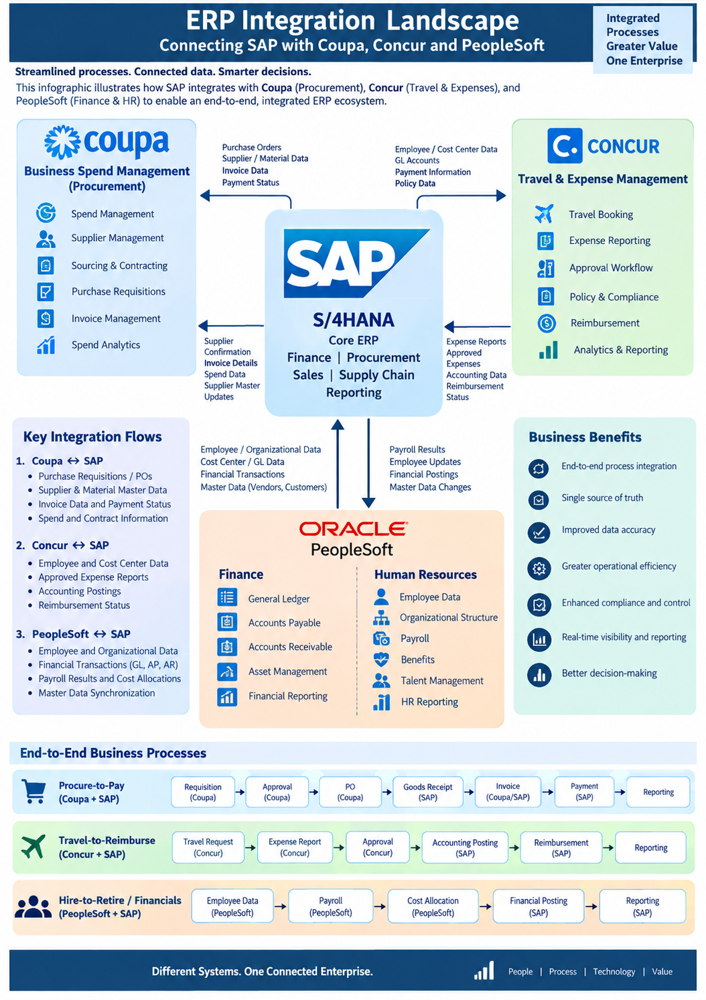

SAP INTEGRATION
SAP External System Integration
SAP S/4HANA • Coupa • Concur • PeopleSoft • ERP Integration • Enterprise Transformation

SAP S/4HANA integration landscape connecting procurement,
travel & expense, finance and HR systems.
Program Overview
Enterprise ERP environments rarely operate as a single application.
SAP S/4HANA often acts as the core ERP platform while specialized systems
support procurement, travel and expense, human resources, payroll and other
business capabilities.
This case study illustrates a representative, non-confidential enterprise
integration program connecting SAP S/4HANA with external platforms such as
Coupa, Concur and PeopleSoft. The objective is to establish reliable
end-to-end business processes, synchronized master data and consistent
financial information across the enterprise.
Program Objective: Create an integrated ERP ecosystem in
which business processes can move seamlessly across systems while maintaining
data quality, security, governance and operational visibility.
Business Challenge
Organizations operating multiple enterprise applications can face
fragmented processes, duplicate data, manual reconciliation, inconsistent
master data and limited end-to-end visibility.
- Multiple systems supporting different business functions
- Duplicate supplier, employee and organizational data
- Manual transfer of transactions between applications
- Delayed financial postings and reconciliation
- Inconsistent master-data ownership
- Complex integration dependencies
- Different release and change cycles across platforms
- Need for stronger security, auditability and compliance
Target Integration Landscape
SAP S/4HANA serves as the core ERP platform, while external applications
provide specialized business capabilities.
- SAP S/4HANA: Finance, procurement, sales, supply chain, reporting and enterprise master data.
- Coupa: Procurement, sourcing, supplier management, purchase requisitions, invoices and spend management.
- Concur: Travel booking, expense reporting, approvals, reimbursement and travel-policy management.
- PeopleSoft: Employee, organizational, payroll and finance-related information.
1. Coupa ↔ SAP Integration
Coupa supports procurement and spend-management processes, while SAP
provides core ERP processing and financial accounting. Integration enables
procurement transactions to flow between the two platforms.
Key Integration Data
- Purchase requisitions
- Purchase orders
- Supplier and material master data
- Invoice information
- Payment status
- Spend and contract information
- Supplier confirmations
Example Procure-to-Pay Flow
Requisition → Approval → Purchase Order → Goods Receipt →
Invoice → Payment → Reporting
Procurement activities can originate in Coupa while appropriate
financial and accounting transactions are processed in SAP.
2. Concur ↔ SAP Integration
Concur can manage travel and expense activities while SAP manages
the corresponding accounting and financial transactions. Integration
reduces manual reconciliation and improves visibility of employee expenses.
Key Integration Data
- Employee and cost-center data
- Travel requests
- Expense reports
- Approved expenses
- Accounting information
- Reimbursement information
- Posting and reimbursement status
Example Travel-to-Reimbursement Flow
Travel Request → Expense Report → Approval →
Accounting Posting → Reimbursement → Reporting
3. PeopleSoft ↔ SAP Integration
PeopleSoft can provide employee, organizational and payroll-related
information while SAP consumes the required data for financial processing,
cost allocation and reporting.
Key Integration Data
- Employee master data
- Organizational structure
- Cost-center information
- General Ledger data
- Payroll results
- Financial transactions
- Master-data changes
Example Hire-to-Retire / Financial Flow
Employee Data → Payroll → Cost Allocation →
Financial Posting → Reporting
Integration Architecture Approach
A scalable integration architecture should separate business applications
from integration logic and provide controlled, observable data exchange.
- API-led and service-oriented integration where appropriate
- Event or message-based integration for selected use cases
- Standard enterprise integration patterns
- Centralized monitoring and error management
- Secure authentication and authorization
- Data transformation and validation
- Retry and exception-handling mechanisms
- Audit trails and transaction traceability
Integration Data Management
Master-data synchronization is a critical success factor in a multi-system
ERP landscape. The program should establish clear ownership and governance
for each major data domain.
- Supplier master
- Customer master
- Material and product master
- Employee master
- Organization and cost-center hierarchy
- General Ledger and financial reference data
- Payment and accounting information
Program Delivery Lifecycle
01 — Initiation
Define business objectives, scope, stakeholders, integration landscape and success criteria.
02 — Discovery & Assessment
Assess current applications, interfaces, data flows, dependencies, integration pain points and operational constraints.
03 — Solution & Integration Design
Define target architecture, interface patterns, data ownership, security model, error handling, monitoring and integration standards.
04 — Build & Integration
Develop and configure interfaces, transformations, APIs, workflows and monitoring capabilities.
05 — Testing & Validation
Execute unit, system integration, end-to-end, performance, security and user-acceptance testing.
06 — Cutover & Go-Live
Coordinate deployment, data synchronization, business readiness, cutover activities and production validation.
07 — Hypercare & Stabilization
Monitor interfaces, resolve production issues, validate business transactions and stabilize operational processes.
08 — Continuous Improvement
Analyze integration performance, optimize interfaces, automate manual activities and improve operational controls.
Project Manager / Program Manager Responsibilities
- Define integration program scope and roadmap
- Coordinate SAP and external-system teams
- Establish governance and decision-making forums
- Manage cross-system dependencies
- Drive interface inventory and integration planning
- Coordinate data and security workstreams
- Manage RAID items and integration risks
- Coordinate SIT, UAT and business validation
- Lead cutover and Go-Live readiness
- Manage vendor and third-party dependencies
- Track budget, schedule, quality and delivery KPIs
- Drive Hypercare and transition to operations
Governance & Controls
- Interface inventory and ownership
- Data ownership and governance
- Security and access controls
- Change and release management
- Integration monitoring and alerting
- Exception and reconciliation management
- Audit and compliance controls
- Production support and SLA management
Key Program Metrics
- Interface delivery and readiness
- Integration defect trends
- Transaction success rate
- Data-quality exceptions
- Interface failure and recovery trends
- Reconciliation accuracy
- Critical incident volume
- Release and deployment performance
- Business-process cycle time
Business Benefits
- End-to-end business process integration
- Improved master-data consistency
- Reduced manual data entry and reconciliation
- Improved financial and operational visibility
- Faster transaction processing
- Improved compliance and auditability
- Better operational efficiency
- More consistent enterprise reporting
- Improved decision-making through connected data
Key Takeaway
SAP integration is not simply an interface-development
exercise. It is an enterprise transformation capability that connects people,
processes, data and technology. Effective program leadership ensures that
integration architecture, business processes, data governance, testing,
cutover and operations work together to deliver a connected ERP ecosystem.